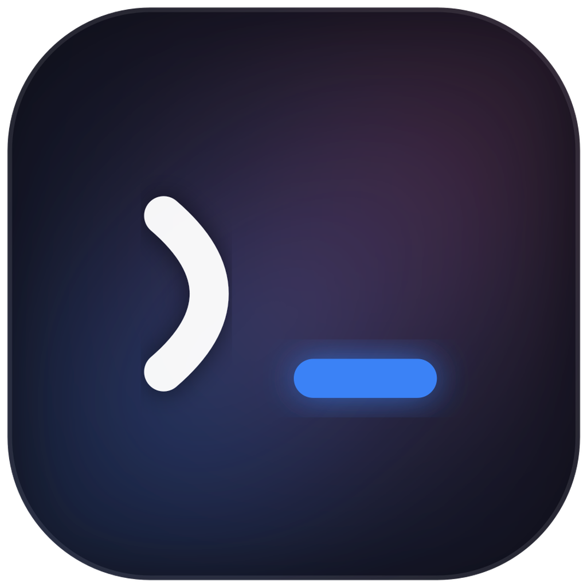

SFTP 窗口
独立的文件窗口，支持多标签、拖放上传下载和多路并行传输。文件可用本机应用打开，保存后自动回传主机；SQLite 数据库可交给 uTable 打开。

终端基于 Ghostty 引擎。文件管理、端口转发、密钥、多主机并行执行和 AI 助手都在同一个 App 里，iPhone 还能远程控制 Mac。代码以 AGPL-3.0 开源，无需注册账号。


终端用 Ghostty 引擎在 GPU 上绘制，大量输出时滚动仍然流畅，Claude Code、Codex 等全屏程序的显示与在 Ghostty 中一致。
拖动标签页即可分屏，重启后按原布局恢复。
本机终端由独立进程持有。uTerm 更新或意外退出后重新打开，终端里的程序不受影响。
在 iPhone 上，shell 留在主机上运行。重新连接后自动接回，并补上断开期间的输出。

管理服务器常用的几样工具，和终端放在一起。
独立的文件窗口，支持多标签、拖放上传下载和多路并行传输。文件可用本机应用打开，保存后自动回传主机；SQLite 数据库可交给 uTable 打开。
在工作区中打开远程文件，支持语法高亮、Markdown 和图片预览，编辑后按 ⌘S 保存回主机。终端位于同一窗口下方。

支持本地、远程和 SOCKS 转发。所有主机的规则集中在一个面板里，可设为随 uTerm 启动自动建立。

在选定的主机上同时执行同一条命令，每台的输出分格显示，可转到后台运行。某台出错时，可交给 AI 继续排查。

按用途分组，支持跳板机。新建时可先测试连接，也可复制已有主机，或从 ~/.ssh/config 导入。

保存常用命令并指定目标主机，执行记录保留 30 天。也可以只描述目标，由 AI 执行。

生成或导入 Ed25519、RSA、ECDSA 密钥，支持带口令的私钥。密钥存放在钥匙串中，经 iCloud 钥匙串同步。

首次连接时核对主机指纹，指纹变化时阻止连接。已保存的指纹可在此查看和删除。

终端、文件、端口转发、快捷命令和 AI 助手在 iPhone 与 iPad 上同样可用，主机和密钥经 iCloud 同步。iPhone Duo 展开或横握时按大屏排版。
shell 由主机上的保持进程运行。切到后台、切换网络或 App 被系统结束后，回来时自动接回，并补上断开期间的输出。
提供 esc、tab、ctrl 和方向键，可填入 claude、codex 等常用命令，并能把剪贴板或相册里的图片、视频发送给主机上的 AI 程序。
Claude Code 等待确认、完成或出错时，状态显示在灵动岛和锁屏上。长按标签页选择「离开后继续运行」，切换到其他 App 后连接保持。
终端和文件标签页位于同一工作区，可拖动分成两栏；回滚内容支持查找。
在 iPhone 上继续使用 Mac 上打开的终端，或查看并操作 Mac 的屏幕。另一台 Mac 也可以作为控制端。


只查看 Mac 上的一个窗口。Mac 会把该窗口调整为适合手机屏幕的尺寸，内容随之重新排版；退出后窗口恢复原来的大小。
「最清晰」时 Mac 的像素与手机一一对应；「标准」时文字与在 Mac 上一样大，也可以继续调大。
直接点按目标位置。单指拖动为滚动，按住后拖动为拖拽，双指轻点为右键。
输入直接发送给该窗口，Mac 上的指针不会移动，窗口被遮挡时也能操作，Mac 前的用户可以同时使用自己的键盘和鼠标。
窗口被遮挡时 macOS 会暂停重绘。开启此项后，查看期间该窗口始终位于最前。
同一网络内直接连接，延迟最低。
不在同一网络时，先尝试打洞直连，不经过服务器。
无法直连时经由自行部署的中继转发。中继只转发加密数据，无法读取内容。
助手在当前主机上执行命令、读取结果，再决定下一步。每条命令按所设的安全级别确认后执行。
可选「每步确认」「只读自动」和「AI 代批」。涉及敏感操作或无法判断风险的命令，始终需要人工确认。
使用自己的 API Key 接入 Anthropic、OpenAI 或兼容接口，可选择模型和思考深度。
可在设置中为 Claude Code、Codex、Cursor、CodeBuddy 和 Antigravity 安装 uTerm 技能。这些工具通过 uTerm 使用已保存的主机执行命令、传输文件和建立隧道，无需获得密码。
--- name: uterm description: 通过 uTerm 使用用户已保存的 SSH 主机：执行远程命令（单机 run、 多机并行 run-many、快捷命令）；经 SFTP 读写远程文件；新建、启停端口转发； 查看用户开着的终端会话 … --- # 用 uTerm 操作远程主机 地址、密码、私钥、口令、跳板机配置全程留在 uTerm 和钥匙串里， 你一个字节也拿不到，也不需要。

按类别列出 uTerm 目前的功能。
uTerm 不运营用于存放用户数据的服务器。
安装后即可使用，不需要注册或登录。
App 中没有统计和埋点。数据只保存在你的设备和你的 iCloud 中。
密码和私钥保存在系统钥匙串中，可开启面容 ID 或触控 ID 应用锁。
App 和中继的源码均以 AGPL-3.0 开源，可自行审计和部署。
Mac 版与 iPhone / iPad 版各自发布，版本号前两段保持一致。
~/.gemini/config/skills/uterm）。
无需注册账号。
需要 iOS / iPadOS 18 或更高版本，目前通过 TestFlight 公开测试。灵动岛与「离开后继续运行」需要更新的系统版本。
加入 TestFlight 公开测试目前通过 TestFlight 公开测试。在 iPhone 或 iPad 上安装 TestFlight 后，打开 邀请链接 加入，之后的测试版会自动推送。
uTerm 无需账号，数据通过你自己的 iCloud 同步，不经过第三方服务器。它是 Mac 与 iOS 的原生 App，内置可执行命令的 AI 助手，并支持用手机远程控制 Mac 的终端和屏幕。
目前只支持 macOS（Apple 芯片）和 iOS / iPadOS。服务器端没有要求，支持 SSH 登录的主机都可以连接。
Mac 和手机都需要安装 uTerm。首次配对时，在 Mac 上输入手机显示的核对码。同一局域网内直接连接；跨网络时先尝试点对点连接，失败时经由自行部署的中继（一条命令即可安装到你的服务器上）。
只发送给你配置的模型服务，使用你的 API Key。未配置时不会发送任何内容。
请在 GitHub Issues 提交。安全问题请按 SECURITY.md 私下报告。